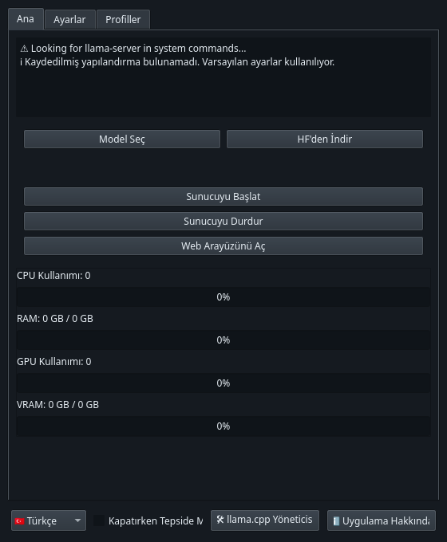

Pythongeliştirilen programlar
Yazılım geliştirme yolculuğumda oluşturduğum projeler. Her bir uygulama pratik ihtiyaçlardan doğdu ve sürekli geliştirilmeye devam ediyor.
Mevcut Projeler
— aktif olarak geliştirilenler
geliştirilen programlar
Yazılım geliştirme yolculuğumda oluşturduğum projeler. Her bir uygulama pratik ihtiyaçlardan doğdu ve sürekli geliştirilmeye devam ediyor.
— aktif olarak geliştirilenler